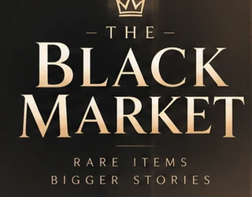

Everything
has a price.
A luxury underground auction transformed into a fast, cinematic slot experience.
5 × 4Demo ModeStake Engine Ready
THE EXCHANGEDEMO SESSION
BALANCE$991.30
BET$1.00
WIN$0.00

A luxury underground auction transformed into a fast, cinematic slot experience.
This public build is an audience demo. It uses local demo outcomes only. Production outcomes will be supplied by the Stake Engine RGS and approved math package.